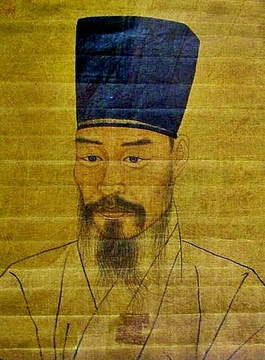

Dinasti Joseon didirikan setelah runtuhnya Dinasti Goryeo yang telah berkuasa hampir 500 tahun akibat peperangan, konflik internal, dan pengaruh kekaisaran asing. Jenderal Yi Seonggye memimpin kudeta dengan menggulingkan raja-raja Goryeo dan mengakhiri pemerintahan dinasti tersebut. Awalnya ia berniat mempertahankan nama Goryeo, namun demi menandai perubahan dan menghindari ancaman politik, ia mendirikan dinasti baru bernama Joseon pada tahun 1392, terinspirasi dari kerajaan kuno Gojoseon, serta memindahkan ibu kota ke Hanyang
Setelah berdirinya Dinasti Joseon, terjadi konflik perebutan takhta antara para putra Raja Taejo. Meskipun Yi Bang-won berjasa besar dalam pendirian dinasti, ia disingkirkan dari posisi putra mahkota akibat pengaruh Jeong Do-jeon yang mendukung Pangeran Uian. Perbedaan pandangan antara Jeong Do-jeon yang menginginkan pemerintahan berbasis menteri dan Yi Bang-won yang menghendaki monarki absolut memicu konflik berdarah. Yi Bang-won kemudian melancarkan serangan istana yang dikenal sebagai Perselisihan Pertama Pangeran, menewaskan Jeong Do-jeon dan para pesaingnya. Terkejut oleh konflik tersebut, Raja Taejo turun takhta dan digantikan oleh Raja Jeongjong. Namun persaingan berlanjut hingga Perselisihan Kedua Pangeran, yang berakhir dengan kemenangan Yi Bang-won. Akhirnya, Yi Bang-won diangkat sebagai raja ketiga Joseon dengan gelar Raja Taejong pada tahun 1400.
 Pada awal pemerintahannya, Raja Taejong memperkuat legitimasi dan kekuasaan raja dengan menghapus tentara swasta bangsawan, mereformasi pajak dan kepemilikan tanah, serta memusatkan pengambilan keputusan negara di bawah persetujuan raja. Ia membubarkan Majelis Dopyeong, mendirikan Kantor Sinmun untuk menampung keluhan rakyat, dan meski kontroversial karena menyingkirkan banyak lawan politik dan kerabat, Taejong berhasil meletakkan fondasi kuat bagi negara dan pemerintahan selanjutnya
Setelah abdikasi Taejong pada 1418, Raja Sejong yang Agung naik takhta dan membawa Joseon ke masa kejayaan. Ia menumpas bajak laut waegu, mengamankan perbatasan utara dari suku Jurchen, serta mendorong kemajuan besar dalam ilmu pengetahuan, pertanian, teknologi, dan budaya. Prestasi terbesarnya adalah penciptaan Hangeul, alfabet Korea, pada tahun 1443. Seusai Sejong, terjadi konflik suksesi. Raja Sejo merebut takhta dari Danjong dan mengeksekusi Enam Menteri Martir. Meski naik dengan cara keras, Sejo memperkuat administrasi negara dan menyusun Kode Besar Administrasi Negara sebagai dasar hukum dinasti.
Masa Raja Seongjong ditandai kemakmuran, stabilitas politik, dan perkembangan budaya serta pemikiran Neo-Konfusianisme melalui dukungan terhadap kaum sarjana Sarim, sebelum akhirnya digantikan oleh Yeonsangun pada tahun 1494
Yeonsangun dikenal sebagai raja paling tiran Dinasti Joseon. Pemerintahannya (1498–1506) ditandai oleh Sahwa atau pembersihan sarjana, kekejaman terhadap selir, pejabat, dan kaum Sarim setelah mengetahui ibunya dipaksa bunuh diri. Ia menutup lembaga pengawas pemerintah, melarang penggunaan Hangeul untuk kritik, serta menyalahgunakan kekuasaan demi kepuasan pribadi. Akibat pemerintahan yang buruk, Yeonsangun akhirnya digulingkan melalui kudeta pada tahun 1506
Penggantinya, Raja Jungjong, naik takhta dalam kondisi politik yang lemah, namun masanya diwarnai upaya reformasi yang dipimpin Jo Gwang-jo. Reformasi tersebut meliputi penguatan pemerintahan lokal (Hyangyak), reformasi tanah, pembatasan kepemilikan budak, penyebaran ajaran Konfusianisme dalam bahasa daerah, dan penegakan hukum yang ketat terhadap korupsi. Namun, reformasi ini ditentang oleh pejabat konservatif. Melalui fitnah, Jo Gwang-jo dieksekusi, yang memicu Pembersihan Literati Ketiga (1519). Setelah itu, politik Joseon dilanda konflik fraksi dan korupsi keluarga kerajaan selama puluhan tahun.
Periode pertengahan Dinasti Joseon ditandai oleh konflik politik internal yang berdarah serta invasi besar dari Jepang dan Manchu yang hampir meruntuhkan dinasti. Secara internal, Joseon melemah akibat perjuangan antar faksi Sarim, yang terpecah menjadi Timur–Barat, lalu berkembang lagi menjadi Utara–Selatan serta Noron–Soron. Pergantian kekuasaan antar faksi sering disertai tuduhan pengkhianatan dan pembersihan massal, seperti peristiwa Gichuk Oksa, yang menewaskan atau mengasingkan sekitar seribu anggota faksi Timur.
Secara eksternal, Joseon menghadapi Invasi Jepang (1592–1598) yang dipimpin Toyotomi Hideyoshi. Lemahnya persiapan militer dan konflik internal membuat Jepang cepat menduduki wilayah penting. Namun, perlawanan rakyat, bantuan Ming Tiongkok, dan terutama keunggulan angkatan laut Joseon di bawah Laksamana Yi Sun-sin berhasil memutus jalur logistik Jepang dan memukul mundur invasi tersebut.
Setelah perang Jepang, Joseon yang telah melemah kembali diserang oleh bangsa Manchu. Pergantian raja dari Gwanghaegun ke Injo mengubah kebijakan luar negeri menjadi pro-Ming, yang memicu konflik dengan Manchu. Akibat dua kali invasi Manchu (1627 dan 1636), Joseon akhirnya dipaksa tunduk kepada Dinasti Qing, memutus hubungan dengan Ming, serta mengirim anggota keluarga kerajaan sebagai bagian dari perjanjian politik. Meski secara resmi berada di bawah Qing, kebencian terhadap Manchu tetap kuat di kalangan elit dan intelektual Joseon, yang terus menganggap Ming sebagai pusat peradaban hingga berabad-abad kemudian.
Setelah invasi Jepang dan Manchu, Joseon mengalami masa damai hampir 200 tahun yang ditandai dengan munculnya Silhak (pemikiran praktis). Para sarjana Silhak mendorong reformasi di bidang pemerintahan, perpajakan, pertanian, dan ilmu pengetahuan untuk memulihkan negara. Reformasi ini membawa manfaat besar, terutama pada masa Raja Hyeonjong, Yeongjo, dan Jeongjo. Raja Jeongjo secara khusus memajukan budaya, pendidikan, mobilitas sosial, serta mendirikan Gyujanggak sebagai pusat intelektual. Namun, setelah wafatnya Raja Jeongjo, Joseon memasuki masa kemunduran akibat politik Sedo, yaitu dominasi keluarga mertua kerajaan seperti Kim Andong. Kekuasaan raja melemah, korupsi merajalela, jabatan diperjualbelikan, kemiskinan meluas, dan pemberontakan sering terjadi. Secara luar negeri, Joseon menerapkan kebijakan isolasionisme.
ada masa Raja Gojong, ayahnya Heungseon Daewongun memerintah sebagai wali dengan kebijakan isolasi, reformasi pajak, dan pelemahan kekuasaan keluarga mertua. Namun setelah Gojong berkuasa penuh, Ratu Min (Permaisuri Myeongseong) dan keluarganya memegang pengaruh besar. Tekanan asing meningkat, terutama dari Jepang, yang memaksa Joseon membuka pelabuhan melalui Traktat Ganghwa (1876). Ketidakpuasan rakyat memicu berbagai pemberontakan, termasuk Pemberontakan Militer 1882 dan Revolusi Donghak 1894. Campur tangan Qing dan Jepang dalam konflik ini memicu Perang Tiongkok–Jepang Pertama, yang berakhir dengan kekalahan Qing dan meningkatnya dominasi Jepang di Korea. Pada tahun 1895, Permaisuri Myeongseong dibunuh oleh agen Jepang.
Untuk menegaskan kedaulatan, Joseon mendeklarasikan Kekaisaran Korea Raya pada 1897, menandai berakhirnya Dinasti Joseon secara resmi. Namun, setelah kemenangan Jepang atas Rusia (1905), Korea menjadi protektorat Jepang, dan akhirnya dianeksasi Jepang pada tahun 1910, mengakhiri pemerintahan Korea yang merdeka.